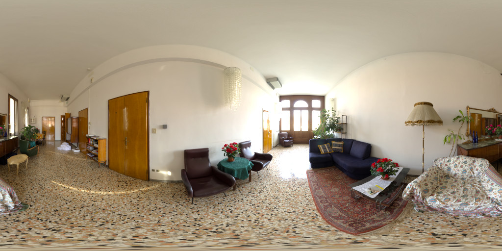

<!DOCTYPE html>
<html>
<head>
    <meta charset="UTF-8">
    <title>aframe-shader-buildings simple example</title>
    <meta name="description" content="A simple example of aframe-shader-buildings">
    <script src="https://aframe.io/releases/1.6.0/aframe.min.js"></script>
    <script src="https://cdn.jsdelivr.net/gh/c-frame/aframe-extras@7.5.0/dist/aframe-extras.controls.min.js"></script>
    <script src="dist/main.js"></script>
    <script src="https://unpkg.com/aframe-simple-sun-sky@^1.2.3/simple-sun-sky.js"></script>
</head>
<body>
<a-scene background="color:#87cefa">
    <a-assets>
        
<!--        -->
        
        
        
        
        
    </a-assets>

    <a-shader-buildings sun-position="-0.3 1.0 0.7" wall-src="#brick" wall-color="#675342"
                        px="#px" nx="#nx" py="#py" ny="#ny" nz="#nz" buildings=
            '[{"x":-5,"z":-25,"xCoreSections":3,"xWingSections":5,"zCoreSections":2,"zWingSections":3,"ySections":2}]'
    ></a-shader-buildings>

    <a-entity id="rig" movement-controls="fly:true; speed:0.6;" position="0 5 5">
        <a-entity camera look-controls position="0 1.6 0"></a-entity>
    </a-entity>

    <a-plane position="0 -0.05 0" rotation="-90 0 0" width="2000" height="2000" color="#276B48"></a-plane>

    <a-simple-sun-sky sun-position="-0.3 1.0 0.7"></a-simple-sun-sky>
    <a-entity light="type: ambient; color: #BBB"></a-entity>
    <a-entity light="type: directional; color: #FFF; intensity: 0.6" position="-0.3 1.0 0.7"></a-entity>
</a-scene>
</body>
</html>
